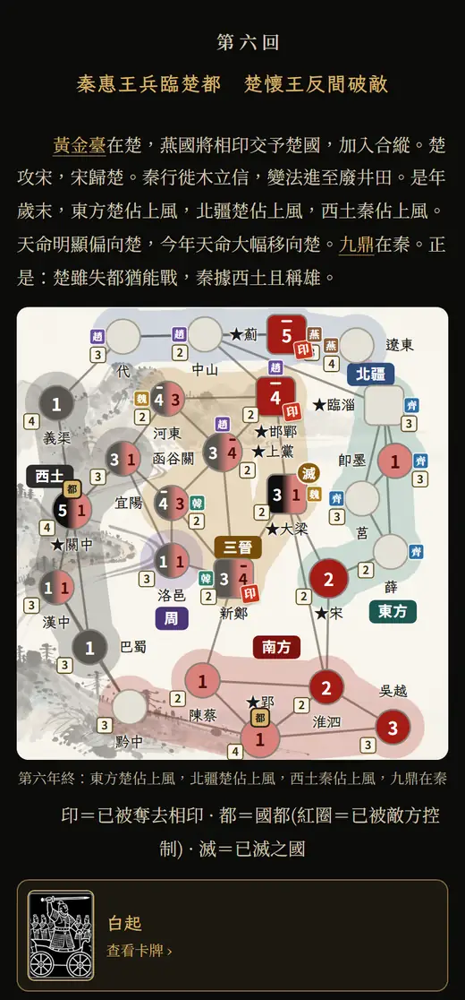
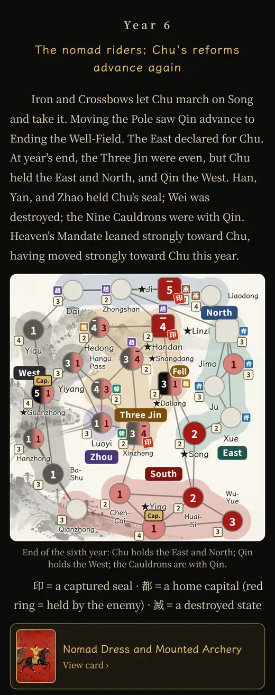

2026.09.28 新功能New
說書人上場：戰報The storyteller arrives: battle reports
玩完一局按「戰報」，說書人把這局寫成八回章回演義。每回附當年年底的地圖，相印、國都、滅國一目了然；重要的牌可以點開看。中英文各一份，也能分享給朋友。After a game, press "Battle report" and a storyteller writes it up as an eight-chapter tale in the old style. Each chapter shows that year's closing map, with the seals, the capitals and the fallen states marked, and the key cards open with a tap. It comes in Chinese and English, ready to share.


2026.09.27 規則Rules
擲骰遊說、國都陷落、五枚相印Dice persuasion, fallen capitals, five seals
遊說改成雙方擲骰，輸的一方失去差額，隨時可以收手。國都被敵方占到年底沒奪回，就此亡國。相印從四枚改為五枚，秦開局在臨淄、薊各有耳目：遠交近攻。Persuasion is now a dice contest: the loser gives up the difference, and you may stop at any time. A capital still in enemy hands at year's end loses the game. The seals go from four to five, and Qin starts with agents in Linzi and Ji: befriend the far, strike the near.
2026.09.27 新功能New
下載紀錄，整局重現Download the log, replay the whole game
每一局都能下載文字紀錄和完整資料。對局結束後雙方手牌全部公開，整局可以一步步重現。Every game can be downloaded as a text log and as full data. When it ends, both hands are revealed and the whole game can be rebuilt move by move.
2026.09.22
正式上線Live
兩種用法定名「扶植」與「奇襲」；規則頁的七十二張牌，每張都附上史事。The two uses get their names, Foster and Raid, and every one of the 72 cards on the rules page carries its history.
2026.09.21
烽火開場與「對手的一手」A beacon-fire opening, and the opponent's move
第一次打開，七國烽火依序點燃，化作黑虎與朱雀。對手出牌時先亮牌，再在地圖上一步步演出。The first time you open the game, the seven states' beacons light one by one and become the black tiger and the vermilion bird. When the opponent plays, the card is shown first, then acted out step by step on the map.
2026.09.20
秦有秦的樂，楚有楚的樂Qin has its music, Chu has its own
數十段配樂與音效，一首首挑過：執秦或執楚、變法前後，音樂都不一樣。Dozens of pieces of music and sound, each picked by ear: the music changes with your side and with the era.
2026.09.18
開工Work begins
以《冷戰熱鬥》的卡牌驅動設計為靈感，把冷戰搬到戰國：秦對楚，七國爭雄。Inspired by the card-driven design of Twilight Struggle, the Cold War moves to the Warring States: Qin against Chu, seven states in contention.